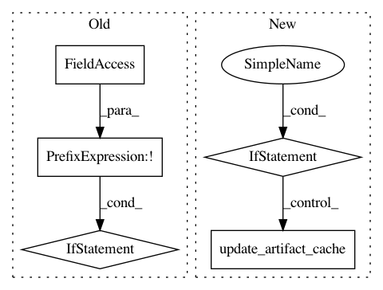

f262b5f4e19953a084a4064d5ce0857143c01134,src/python/twitter/pants/tasks/java_compile.py,JavaCompile,execute_single_compilation,#JavaCompile#Any#Any#,158
Before Change
depfile = self.create_depfile_path(versioned_targets.targets)
if not versioned_targets.valid:
self.merge_depfile(versioned_targets) // Get what we can from previous builds.
self.context.log.info("Compiling targets %s" % str(versioned_targets.targets))
sources_by_target, processors, fingerprint = self.calculate_sources(versioned_targets.targets)
if sources_by_target:
sources = reduce(lambda all, sources: all.union(sources), sources_by_target.values())
if not sources:
self.context.log.warn("Skipping java compile for targets with no sources:\n %s" %
"\n ".join(str(t) for t in sources_by_target.keys()))
else:
classpath = [jar for conf, jar in cp if conf in self._confs]
result = self.compile(classpath, sources, fingerprint, depfile)
if result != 0:
default_message = "Unexpected error - %s returned %d" % (_JMAKE_MAIN, result)
raise TaskError(_JMAKE_ERROR_CODES.get(result, default_message))
if processors and not self.dry_run:
// Produce a monolithic apt processor service info file for further compilation rounds
// and the unit test classpath.
processor_info_file = os.path.join(self._classes_dir, _PROCESSOR_INFO_FILE)
if os.path.exists(processor_info_file):
with safe_open(processor_info_file, "r") as f:
for processor in f:
processors.add(processor.strip())
self.write_processor_info(processor_info_file, processors)
self.post_process(versioned_targets)
// Post-processing steps that must happen even for valid targets.
def post_process(self, versioned_targets):
After Change
self.write_processor_info(processor_info_file, processors)
artifact_files.append(processor_info_file)
if self._artifact_cache and self.context.options.write_to_artifact_cache:
self.update_artifact_cache(vt, artifact_files)
self.post_process(vt)
// Post-processing steps that must happen even for valid targets.
def post_process(self, versioned_targets):
In pattern: SUPERPATTERN
Frequency: 3
Non-data size: 5
Instances
Project Name: pantsbuild/pants
Commit Name: f262b5f4e19953a084a4064d5ce0857143c01134
Time: 2013-03-04
Author: benjy@foursquare.com
File Name: src/python/twitter/pants/tasks/java_compile.py
Class Name: JavaCompile
Method Name: execute_single_compilation
Project Name: pantsbuild/pants
Commit Name: 9f236fd5795b60f8f75d77e20189dbeabc123814
Time: 2013-04-04
Author: benjy@foursquare.com
File Name: src/python/twitter/pants/tasks/java_compile.py
Class Name: JavaCompile
Method Name: execute_single_compilation
Project Name: pantsbuild/pants
Commit Name: 699600d95b2b30291b26b8051cc379c0452e8c25
Time: 2013-04-09
Author: markcc@foursquare.com
File Name: src/python/twitter/pants/tasks/java_compile.py
Class Name: JavaCompile
Method Name: execute_single_compilation